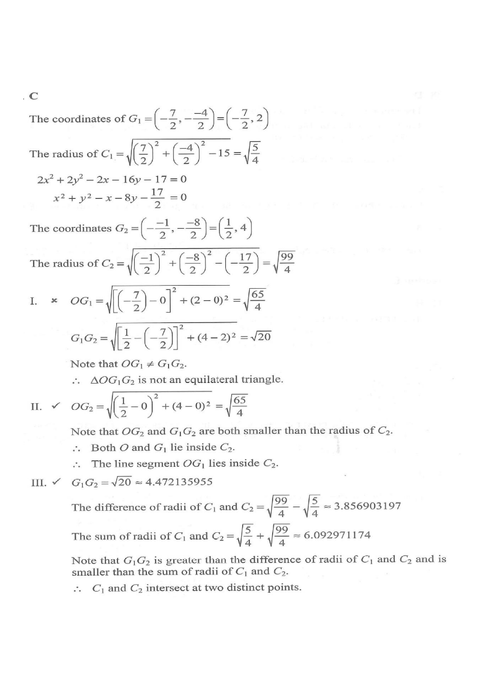

DSE 2023 · 卷二 · Q27
兩圓的圓心與相交
圓形幾何 · 圓的方程 · 選擇題
題目
圓 $C_1$ 與 $C_2$ 的方程分別為\[ x^2+y^2+7x-4y+15=0 \]及\[ 2x^2+2y^2-2x-16y-17=0 \]設 $G_1$、$G_2$ 分別為 $C_1$、$C_2$ 的圓心，$O$ 為原點。下列哪項正確？ I. $\Delta OG_1G_2$ 為等邊三角形 II. 線段 $OG_1$ 在 $C_2$ 之內 III. $C_1$ 與 $C_2$ 相交於兩個相異點
A.
只有 I 及 II
B.
只有 I 及 III
C.
只有 II 及 III
D.
I、II 及 III
題解

圖：題解附圖（原試卷）
第 1 步
$C_1$ 的圓心與半徑
配方法
\(x^2+y^2+Dx+Ey+F=0\Rightarrow G\left(-\tfrac D2,-\tfrac E2\right)\)
圓心為 $\left(-\frac D2,-\frac E2\right)$，半徑 $r=\sqrt{\frac{D^2+E^2}{4}-F}$。
\[ \left(x+\tfrac72\right)^2+(y-2)^2=\left(\tfrac72\right)^2+4-15=\tfrac54 \]故 $G_1\left(-\tfrac72,2\right)$，$r_1=\dfrac{\sqrt5}{2}$。
第 2 步
$C_2$ 的圓心與半徑
先整式除以 $2$：$x^2+y^2-x-8y-\dfrac{17}{2}=0$，配方得\[ \left(x-\tfrac12\right)^2+(y-4)^2=\tfrac14+16+\tfrac{17}{2}=\tfrac{99}{4} \]故 $G_2\left(\tfrac12,4\right)$，$r_2=\dfrac{3\sqrt{11}}{2}$。
第 3 步
檢驗 I
\[ OG_1=OG_2=\sqrt{\tfrac{65}{4}}=\frac{\sqrt{65}}{2}\approx4.03,\qquad G_1G_2=\sqrt{4^2+2^2}=\sqrt{20}\approx4.47 \]三邊不全等，$\Delta OG_1G_2$ 只是等腰，I 錯誤。
第 4 步
檢驗 II
$OG_2=\dfrac{\sqrt{65}}{2}\approx4.03<r_2\approx4.98$，$G_1G_2=\sqrt{20}\approx4.47<r_2$，故 $O$ 與 $G_1$ 都在圓 $C_2$ 之內。圓盤是凸集，整條線段 $OG_1$ 也在 $C_2$ 之內，II 正確。
第 5 步
檢驗 III
兩圓相交
\(|r_2-r_1|<G_1G_2<r_1+r_2\)
圓心距介於半徑差與半徑和之間時，兩圓相交於兩點。
\[ r_2-r_1\approx3.86,\qquad r_1+r_2\approx6.09 \]而 $G_1G_2\approx4.47$ 落在兩者之間，故兩圓相交於兩個相異點，III 正確。
答案
C
（只有 II 及 III）
練習
同類新題
題目.
圓 $x^2+y^2-4x+6y-12=0$ 的圓心及半徑為何？
顯示題解
第 1 步.
$G=\left(-\frac{-4}{2},-\frac{6}{2}\right)=(2,-3)$
第 2 步.
$r=\sqrt{2^2+(-3)^2+12}=\sqrt{25}$
答案：圓心 $(2,-3)$，半徑 $5$
‹ 上一題
目錄
下一題 ›